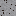
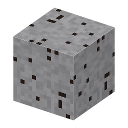

①子ども とても重い金属、タングステンが入った鉱石。
③大人 花崗岩のマグマが冷えるとき、最後に残った熱い水（熱水）にタングステンや錫が溶けこみ、割れ目で冷えて石英脈に結晶する。だから鉄マンガン重石は錫石と一緒に出ることが多い。
④ガチ タングステンの融点は3422℃で、金属の中でいちばん高い。密度は約19.3g/cm³で金とほぼ同じ。今は世界のタングステンの約8割を中国が生産している。
（作り方のレシピは無い：拾う・掘る・ほかの方法）
（このアイテムを使うレシピは無い）